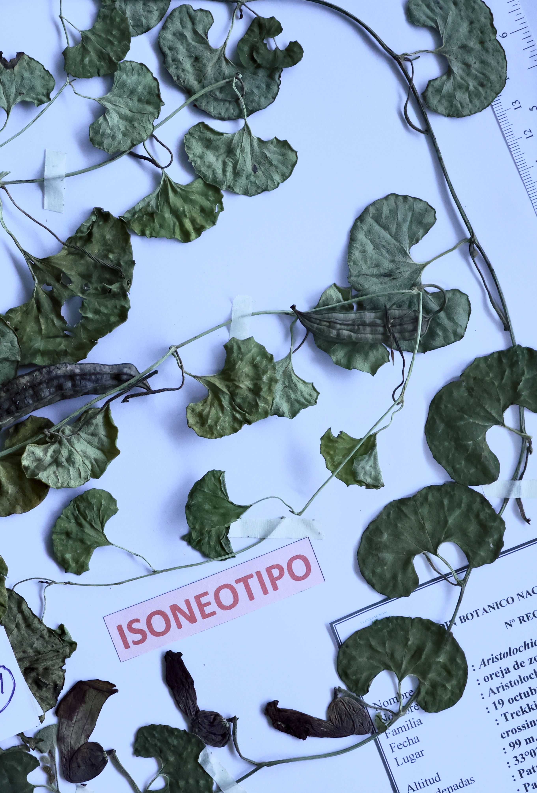
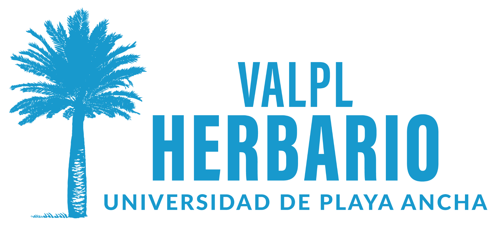
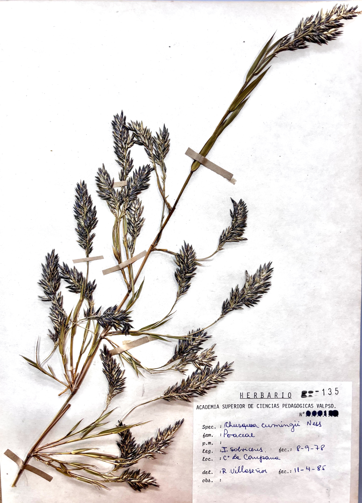
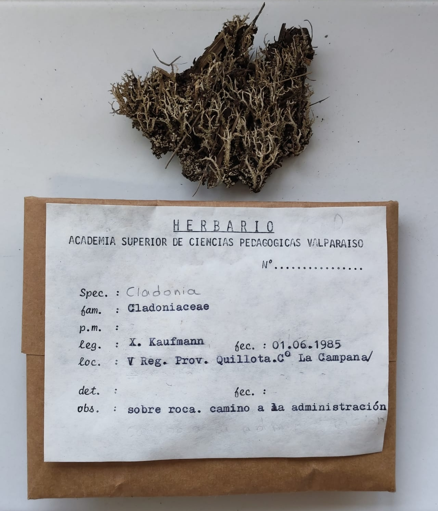
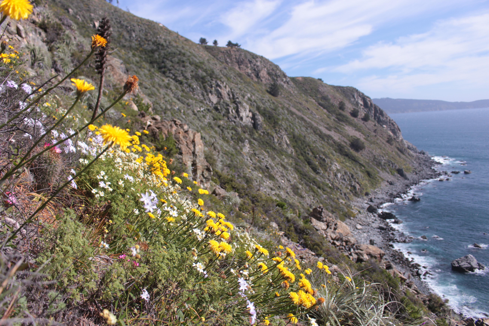

Type specimens
Key material housed at Herbarium VALPL and prioritized for digitization.

IAPT-FUNDED PROJECT · HERBARIUM VALPL
Digitizing Type and Historical Flora from Valparaíso Priority Conservation Sites and Antarctic Lichens (Chile)
EXPLORE THE PROJECT ↓ABOUT THE PROJECT
An IAPT-funded project to make selected specimens and their data accessible. We combine collection care, data preparation, student training and IT infrastructure into a sustainable digitization workflow for central Chile and Antarctica.
WHAT ARE WE DIGITISING?

Key material housed at Herbarium VALPL and prioritized for digitization.

Historical collections from priority conservation sites in the Valparaíso region.

Historical and recent lichen material connected to Chilean Antarctic territories.

Collections that document plant diversity in sites of conservation importance.
FIVE FOUNDATIONS, BUILT IN PARALLEL
Assess · Organise · Prioritise · Conserve
From labels to structured data
Building skills for the next generation
Database · Image storage · Data security
SOPs · Workflows · Open access
FROM SPECIMEN TO DIGITAL RECORD
Prepare the collection
Capture and process data
Store, validate & publish
Open data for research and society
PROJECT JOURNEY · WHERE ARE WE NOW?
PEOPLE & TRAINING
The project brings together herbarium expertise, professional collaboration, volunteer support and undergraduate training.
DATA ALREADY ONLINE
Herbarium VALPL is already sharing biodiversity data through GBIF. This project builds on that foundation through further digitization, curation and publication.
PROJECT UPDATES
Add presentations, posters and conference contributions.
View conference invitation ↗Add presentations, posters and conference contributions.
Add articles, protocols, datasets and other scholarly outputs.
Document training activities, workshops and capacity building.
FUNDING & SUPPORT
Funded through the IAPT Small Grants programme 2026. We also acknowledge the institutional support of Universidad de Playa Ancha and WiNoDa travel support.